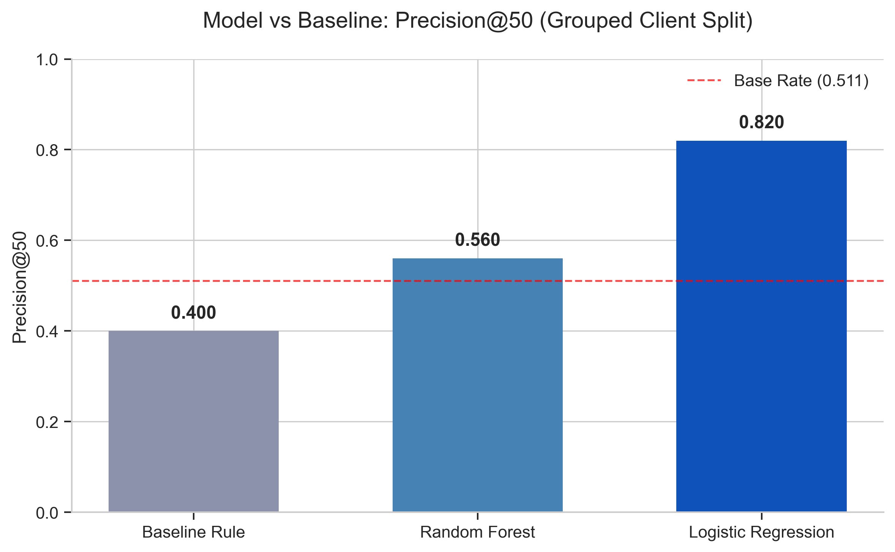
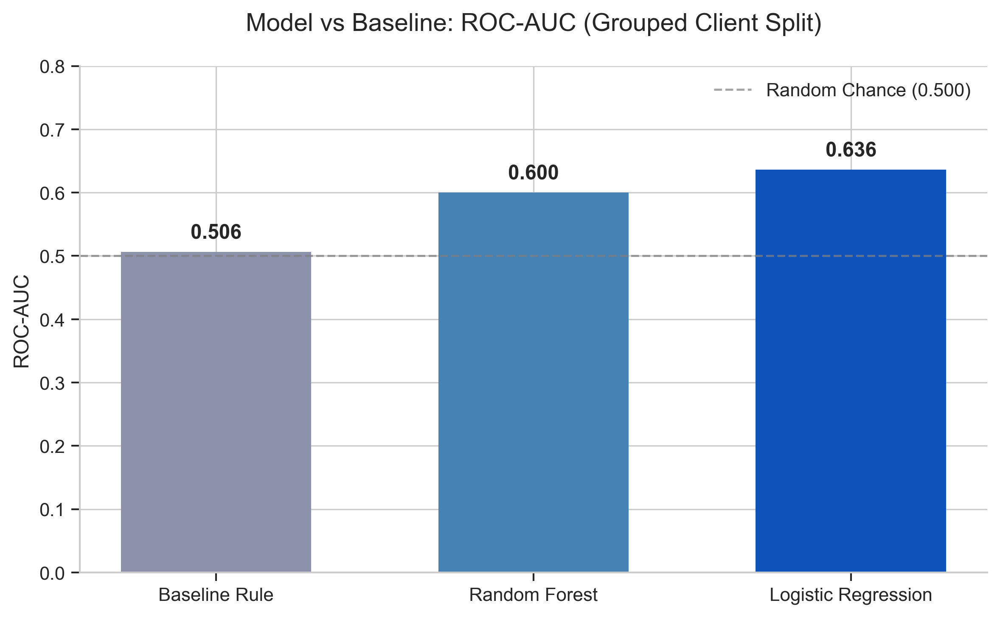
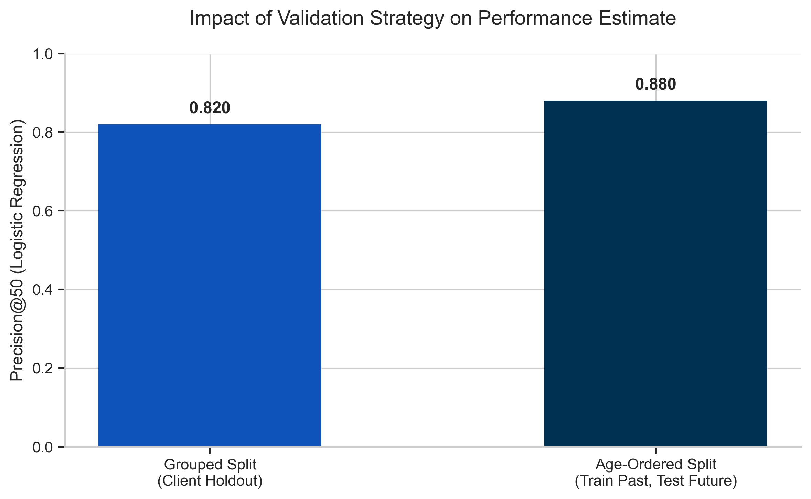

Introduction
Editorial teams face a resource allocation problem: they must balance publishing new articles with updating old ones. As content ages, it naturally accumulates outdated facts and loses "freshness," leading to a gradual decay in search engine visibility. However, blindly updating every old page wastes resources, while waiting for traffic to hit zero means losing hard-earned audience share.
This study evaluates whether machine learning can accurately identify which pages are currently entering a state of decline. By catching content at the inflection point—where it still generates impressions but is losing competitive position—we can direct limited editorial effort to where it has the highest potential ROI.
Data
The models were trained on a 30,000-row anonymized, cross-sectional dataset representing a 90-day observation window. This is a representative sample drawn from the larger underlying FlyRank internship warehouse (v20260703, ~79 million daily performance rows across 17 months). We explicitly distinguish this 30k training snapshot from the full warehouse to ensure transparent evaluation scope.
The unit of analysis is a single content item. To prevent memorization and ensure public safety, client domains, URLs, search queries, and raw text were stripped and replaced with pseudonymous IDs (e.g., client_id, content_id). The dataset contains historical engagement metrics (impressions, clicks, average position), structural properties (word count), and age indicators (days since last update, content age).
Methodology
Problem Formulation
We framed the task as a binary classification problem, where the model outputs a probability that is then used to rank candidates for review.
Label Definition
The target variable, is_declining, is defined as 1 when the page's directional trend is categorized as "down." The base rate of decline in our dataset is 54.2%.
Features and Leakage Exclusions
The models relied purely on trailing 90-day observation window metrics. Features included log-transformed impressions and clicks, average position, click-through rate, and staleness metrics. We strictly excluded variables that mathematically derive the target (trend_direction, trend_pct) and pseudonymous identifiers (client_id, content_id) to prevent target leakage and client memorization.
Baseline Construction
We built a transparent, rule-based baseline to benchmark model performance. A page was flagged for refresh if it was "stale" (not updated in ≥ 91 days), "visible" (≥ 100 impressions in 90 days), and in "striking distance" (average position 4–20). This rule generated a heuristic score used for ranking.
Models and Validation Strategy
We trained Logistic Regression and Random Forest classifiers. To ensure an honest evaluation that mimics real-world deployment on new clients, the primary comparison uses a grouped validation split (GroupShuffleSplit by client_id). We also conducted a secondary age-ordered (time-aware) validation experiment to proxy temporal deployment.
Results
On the primary grouped-client holdout split, the Logistic Regression model outperformed both the Random Forest and the baseline heuristic, achieving a Precision@50 of 0.820 (compared to the baseline's 0.400). The test-set base rate was 0.511.

| Model | Precision@50 | ROC-AUC | Notes |
|---|---|---|---|
| Week 4 Baseline | 0.400 | 0.506 | Hard-coded heuristic on stale/visible/striking |
| Random Forest | 0.560 | 0.600 | Depth-6 tree ensemble |
| Logistic Regression | 0.820 | 0.636 | Weighted linear model |

Validation Strategy Audit
In a secondary experiment, we evaluated the Logistic Regression model using an age-ordered, time-aware split (training on the 80% older pages, testing on the 20% newer pages) to more closely mimic the directional flow of time. Under this age-ordered split, Precision@50 increased to 0.880, providing an additional validation view of the model's ranking performance.

Limitations & Honest Framing
This research utilizes observational cross-sectional data. We cannot make causal claims; the model does not prove that updating a page will mathematically cause a traffic recovery. The model merely observes that pages with specific historical engagement and staleness patterns are highly associated with traffic decline.
Furthermore, because the dataset strips raw text and URLs, the model possesses no semantic understanding of content quality, search intent shifts, or factual accuracy. An editor must still investigate *why* a flagged page is declining before executing a refresh.
Ranked Recommendations / Action Playbook
The model outputs a ranked probability queue designed for decision-support, mapping scores to specific editorial workflows:
- High Priority Refresh: Pages with strong historical visibility (>1000 impressions) showing a high model probability of decline (>75%). Action: Comprehensive editorial review and structural update.
- Standard Refresh Review: Pages with high decline risk (>75%) but lower historical volume. Action: Evaluate if the topic warrants the effort; otherwise, consolidate.
- Preventative Update: Pages that are stale (>180 days) but retain high traffic. Action: Light refresh to update facts and dates before decay hits.
This queue serves to guide human attention; it should not be hooked up to an automated CMS publishing system.
Reproducibility
The full analytical workflow is available in the FlyRank Machine Learning repository. The final modeling logic, data preparation, and evaluation steps are documented in the capstone notebook.
Random states were fixed (`random_state=42`) across train-test splits and classifiers to ensure reproducible metrics.